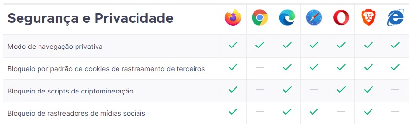

O Bootcamp NTT Data Diversidade é fruto de uma parceria entre a empresa NTT Data e a DIO. A NTT Data é uma subsidiária da multinacional japonesa NTT Data Corporation, tendo por matriz a Nippon Telegraph and Telephone. Tem por destaque ser uma inovadora global que ajuda os clientes a transformare-se através de consultoria, soluções industriais, serviços de processos de negócios, modernização em TI e serviços gerenciados. O compromisso da NTT é o sucesso a longo prazo e a combinação de alcance global com atenção local ao cliente para servir nos mais de 50 países em que está presente.
Lastreando a maré de inovação, vem a DIO - Digital Inovation One, uma das maiores escolas tech da atualidade. Com presença global, a DIO continua crescendo e atraindo cada vez mais alunos e empresas dispostos a se reinventarem e despontarem com as melhores tecnologias do mercado. Tudo isso ministrado por um time super antenado e ímpar em habilidades técnicas. Nesta parceria, NTT Data e DIO atentam para as pautas de inclusividade e representatividade, voltando-se para os públicos com menor presença digital, reiterando seus compromissos com a sociedade.
Sendo a mais antiga ferramenta de calcular conhecida, o ábaco foi inventado por volta de 2400 a.C., na Babilônia. Como predecessor em uma extensa linha do tempo, precedeu a gramática de Sânscrito - inventada na Índia antiga com poder computacional teórico comparável à máquina de turing, o logaritmo, os ossos de Napier, a calculadora de Pascal, e um longo processo de desenvolvimento e pesquisa contínua através dos tempos até que fosse desenvolvido o primeiro computador eletrônico, ENIAC.
Do ENIAC aos dias atuais, o avanço tecnológico permitiu cada vez mais portabilidade e acesso público aos computadores, em um meio que não pára de evoluir, seja pela melhora do hardware, reduzindo em tamanho e aumentando a performance, seja pela pesquisa incessante na área de Inteligência Artificial, quer seja pela computação quântica, que a cada dia encontra novos usos.
Navegadores são os softwares utilizados para acessar páginas de internet. Cada navegador possui características singulares, a depender da política da empresa que o mantém. Entretanto, alguns padrões de segurança e usabilidade são mantidos entre eles. Abaixo, há um comparativo dos navegadores mais utilizados no mundo, destacando funcionalidades de segurança e privacidade.
 Fonte: Mozilla.org - Acesso em 09/10/2022Um Website, de acordo com a Oxford Languages1, é definido como uma série de páginas web sitiadas sob um único nome de domínio, tipicamente produzida por uma única pessoa ou organização. Normalmente são de acesso público, interligadas por meio de hiperlinks e usualmente tratam de um tema em particular. São hospedados em máquinas ou computadores que são utilizadas como meio de distribuição do conteúdo disposto, sendo estas máquinas e computadores denominados servidores.
Cliente é o nome dado a qualquer hardware de computador ou dispositivo de software que requisita acesso a um serviço provido por um servidor. Clientes são vistos tipicamente como o programa resquisitante ou usuário em uma arquitetura cliente-servidor.
Por sua vez, Servidor é um programa de computador ou dispositivo que provê um serviço a outro programa de computador e seu usuário - definido anteriormente como cliente. Em um data center, o computador em que um programa servidor roda é comumente conhecido como servidor.
HTML é a sigla em inglês para Hypertext Markup Language, ou Linguagem de Marcação de Hipertexto, sendo definida como o bloco de construção basilar da web. Normalmente é usado em conjunto com CSS (Cascading Style Sheet ou Folha de Estilos em Cascata) que define aparência/apresentação, e/ou o JavaScript, linguagem que é responsável por funcionalidade/comportamento. Hipertexto refere-se aos links que conectam páginas da web entre si, seja dentro de um ou vários sites.
"A molécula favorita de quase todo desenvolvedor é C8H10N4O2, também conhecida como Cafeína." Autor Desconhecido
"O 'F' na palavra programação significa
frustraçãofelicidade." Autor Desconhecido